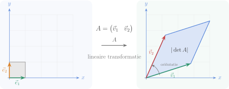
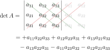

Hoofdstuk 3Determinanten

Leerplandoelstellingen (GO! Navigator)
Gevorderde wiskunde (WD3_06.08)
-
• WD3_06.08.08 (MD 06.08.30) De leerlingen stellen vectoriële, parametrische en cartesische vergelijkingen van rechten en vlakken in de ruimte op.
-
• WD3_06.08.10 (MD 06.08.33) De leerlingen berekenen afstanden en hoeken in de ruimte.
-
• WD3_06.08.12 (MD 06.08.01) De leerlingen voeren bewerkingen uit met matrices: optelling, scalaire vermenigvuldiging, matrixvermenigvuldiging, machtsverheffing en transpositie.
-
– afbakening: rekenregels en eigenschappen
-
-
• WD3_06.08.14 (MD 06.08.03) De leerlingen berekenen de rang van matrices, de inverse matrix van inverteerbare matrices en de determinant van vierkante matrices.
-
– afbakening: ontwikkeling naar rij of kolom
-
– afbakening: eigenschappen van determinanten
-
Didactische uitwerking: determinanten van orde \(2\), \(3\) en \(n\), minoren en cofactoren, ontwikkeling volgens Laplace, regel van Sarrus, eigenschappen van determinanten, determinant van een product, inverse matrix, adjunctmatrix, stelsel van Cramer, rang van een matrix, en meetkundige toepassingen van determinanten zoals vergelijking van een rechte, collineariteit en oppervlakte van een driehoek.
I Determinant van een \(n\times n\)-matrix
1 Determinant van \(1^\text {e}\) orde (=\(1\times 1\)-matrix)
Voor \(A=(\,a\,)\) geldt eenvoudig dat de determinant het element zelf is:
\[ \det A = |A| = a. \]
2 Determinant van een \(2\times 2\)-matrix (=\(2^\text {e}\) orde)
Definitie
Voor
\[ A=\begin {pmatrix}a_{11}&a_{12}\\[2pt] a_{21}&a_{22}\end {pmatrix} \]
is de determinant het reëel getal \(a_{11}a_{22}-a_{12}a_{21}\).
Notatie
\[ \det A=|A|=\begin {vmatrix}a_{11}&a_{12}\\[2pt] a_{21}&a_{22}\end {vmatrix}=a_{11}a_{22}-a_{21}a_{12}. \]
Voorbeelden
Bepaal telkens de determinant.
-
(a) \(\begin {vmatrix}2&3\\4&5\end {vmatrix}\)
\(\seteqnumber{0}{}{0}\)\begin{align*} \begin{vmatrix} 2 & 3\\ 4 & 5 \end {vmatrix} &= 2\cdot 5-3\cdot 4\\ &= 10-12\\ &= -2. \end{align*}
-
(b) \(\begin {vmatrix}1&0\\0&1\end {vmatrix}\)
\(\seteqnumber{0}{}{0}\)\begin{align*} \begin{vmatrix} 1 & 0\\ 0 & 1 \end {vmatrix} &= 1\cdot 1-0\cdot 0\\ &= 1-0\\ &= 1. \end{align*}
-
(c) \(\begin {vmatrix}\cos \alpha &\sin \alpha \\-\sin \alpha &\cos \alpha \end {vmatrix}\)
\(\seteqnumber{0}{}{0}\)\begin{align*} \begin{vmatrix} \cos \alpha & \sin \alpha \\ -\sin \alpha & \cos \alpha \end {vmatrix} &= \cos \alpha \cdot \cos \alpha - \sin \alpha \cdot (-\sin \alpha )\\ &= \cos ^{2}\alpha + \sin ^{2}\alpha \\ &= 1. \end{align*}
Meetkundige betekenis
Oefeningen
p 129 nr 1, 2
3 Determinant van \(3^\text {e}\) orde (=\(3\times 3\)-matrix)
Definitie Minor en Cofactor van een element
Beschouw een \(3\times 3\)-matrix en neem het element \(a_{31}\).
\[ A= \begin {pNiceMatrix}[columns-width=1.2em] a_{11}&a_{12}&a_{13}\\ a_{21}&a_{22}&a_{23}\\ a_{31}&a_{32}&a_{33} \CodeAfter \markeercellen {lichtblauw}{3-1}{3-3} \markeercellen {lichtblauw}{1-1}{3-1} \end {pNiceMatrix} \]
Minor Schrap de \(i^\text {e}\) rij en de \(j^\text {e}\) kolom van \(A\). De determinant van de overblijvende \(2\times 2\)-matrix is de minor \(M_{ij}\) van het element \(a_{ij}\). Voor \(a_{31}\) schrappen we rij \(3\) en kolom \(1\):
\[ M_{31}=\begin {vmatrix}a_{12} & a_{13} \\ a_{22} & a_{23} \end {vmatrix}. \]
Cofactor De cofactor \(A_{ij}\) is de minor met een teken ervoor: Dus een plusteken als \(i+j\) even is en een minteken als \(i+j\) oneven is. Zo krijgen we het schaakbordpatroon van tekens:
Voor de elementen \(a_{31}\) en \(a_{32}\) geeft dat:
\(\seteqnumber{0}{}{0}\)\begin{align*} A_{31}&=(+)\,M_{31}=+\begin{vmatrix}a_{12} & a_{13} \\ a_{22} & a_{23} \end {vmatrix},\\[4pt] A_{32}&=(-)\,M_{32}=-\begin{vmatrix}a_{11} & a_{13} \\ a_{21} & a_{23} \end {vmatrix}. \end{align*}
Voorbeeld Voor \(A=\begin {pmatrix} 1&2&3\\ 4&5&6\\ 7&8&9 \end {pmatrix} \) vinden we o.a.:
\(\seteqnumber{0}{}{0}\)\begin{align*} A_{11}&=(+)\,\begin{vmatrix}5&6\\ 8&9\end {vmatrix}=5\cdot 9-6\cdot 8=45-48=-3,\\[4pt] A_{12}&=(-)\,\begin{vmatrix}4&6\\ 7&9\end {vmatrix}=-(4\cdot 9-6\cdot 7)=-(36-42)=+6,\\[4pt] A_{22}&=(+)\,\begin{vmatrix}1&3\\ 7&9\end {vmatrix}=1\cdot 9-3\cdot 7=9-21=-12. \end{align*} (Analoge berekeningen geven \(A_{13}=-3\), \(A_{21}=+6\), \(A_{23}=+6\), \(A_{31}=-3\), \(A_{32}=+6\), \(A_{33}=-3\).)
Definitie methode van Laplace
Voor
\[ A=\begin {pNiceMatrix}[columns-width=1.2em] a_{11}&a_{12}&a_{13}\\ a_{21}&a_{22}&a_{23}\\ a_{31}&a_{32}&a_{33} \CodeAfter \markeercellen {rowc}{1-1}{1-3} \end {pNiceMatrix} \]
is de determinant gelijk aan de som van de producten van de elementen van een rij (of kolom) met hun overeenkomstige cofactoren:
\(\seteqnumber{0}{}{0}\)\begin{align*} \det A &= a_{11}A_{11}+a_{12}A_{12}+a_{13}A_{13}\qquad (\text {volgens R1})\\ &= a_{11}\begin{vmatrix} a_{22} & a_{23} \\ a_{32} & a_{33} \end {vmatrix} - a_{12}\begin{vmatrix} a_{21} & a_{23} \\ a_{31} & a_{33} \end {vmatrix} + a_{13}\begin{vmatrix} a_{21} & a_{22} \\ a_{31} & a_{32} \end {vmatrix} \\[6pt] &= a_{11}(a_{22}a_{33}-a_{23}a_{32}) - a_{12}(a_{21}a_{33}-a_{23}a_{31}) + a_{13}(a_{21}a_{32}-a_{22}a_{31})\\ &= a_{11}a_{22}a_{33} - a_{11}a_{23}a_{32} - a_{12}a_{21}a_{33} + a_{12}a_{23}a_{31} + a_{13}a_{21}a_{32} - a_{13}a_{22}a_{31}. \end{align*}
Ontwikkel ook eens volgens K2:
\[ \begin {pNiceMatrix}[columns-width=1.2em] a_{11}&a_{12}&a_{13}\\ a_{21}&a_{22}&a_{23}\\ a_{31}&a_{32}&a_{33} \CodeAfter \markeercellen {colc}{1-2}{3-2} \end {pNiceMatrix} \]
\(\seteqnumber{0}{}{0}\)\begin{align*} \det A &= a_{12}A_{12}+a_{22}A_{22}+a_{32}A_{32} \qquad (\text {volgens K2})\\ &= -a_{12}\begin{vmatrix} a_{21} & a_{23} \\ a_{31} & a_{33} \end {vmatrix} + a_{22}\begin{vmatrix} a_{11} & a_{13} \\ a_{31} & a_{33} \end {vmatrix} - a_{32}\begin{vmatrix} a_{11} & a_{13} \\ a_{21} & a_{23} \end {vmatrix}\\ &= \ldots \end{align*}
Geeft zelfde resultaat!
Voorbeeld
\[ A= \begin {pmatrix} 1&-3&5\\ -2&1&-2\\ 1&-5&0 \end {pmatrix} \]
Ontwikkel volgens rij 1:
\begin{align*}
\det A &= 1\cdot \begin{vmatrix}1&-2\\ -5&0\end {vmatrix} +(-3)\cdot \begin{vmatrix}-2&-2\\ 1&0\end {vmatrix} +5\cdot \begin{vmatrix}-2&1\\ 1&-5\end {vmatrix}
\\[2pt] &= 1\cdot (-10)\;-\;(-3)\cdot 2\;+\;5\cdot 9 \\ &= -10+6+45=41.
\end{align*}
(Je kan dit ook volgens een andere rij of kolom uitwerken: het resultaat blijft \(41\).)
Besluit
Het resultaat van \(\det A\) hangt niet af van de gebruikte rij of kolom.
Oefeningen
p 129 n 3 (Laplace gebruiken)
Definitie regel van Sarrus

Voorbeeld
\[ A=\begin {pmatrix}3&-2&1\\2&1&2\\3&2&4\end {pmatrix}. \]
We tellen de producten op de drie hoofddiagonalen op. Daarna trekken we de producten op de drie nevendiagonalen af:
\begin{align*}
\det A &= 3\cdot 1\cdot 4+(-2)\cdot 2\cdot 3+1\cdot 2\cdot 2\\ &\phantom {=}{}-1\cdot 1\cdot 3-3\cdot 2\cdot 2-(-2)\cdot 2\cdot 4\\ &= 12-12+4-3-12+16\\ &= 5.
\end{align*}
Oefeningen
p 129 n 3 (Sarrus gebruiken)
4 Determinant van hogere orde (\(n\times n\))
Werkwijze
Ontwikkel volgens Laplace langs de eenvoudigste rij of kolom (met de meeste nullen) tot je orde \(3\) bereikt; werk dan verder met Laplace of Sarrus.
Voorbeeld 1
\(\seteqnumber{0}{}{0}\)\begin{align*} \begin{vNiceMatrix}[columns-width=1.2em] p&1&0&0\\ 1&q&0&0\\ 0&0&r&1\\ 0&0&1&s \CodeAfter \markeercellen [.25]{rowc}{1-1}{1-4} \end {vNiceMatrix} &\weq [\text {R1}]{=} p\, \begin{vNiceMatrix}[columns-width=1.2em] q&0&0\\ 0&r&1\\ 0&1&s \CodeAfter \markeercellen [.25]{rowc}{1-1}{1-3} \end {vNiceMatrix} -1\, \begin{vNiceMatrix}[columns-width=1.2em] 1&0&0\\ 0&r&1\\ 0&1&s \CodeAfter \markeercellen [.25]{rowc}{1-1}{1-3} \end {vNiceMatrix} \\[4pt] &\weq [\text {R1}]{=} p\left (q\begin{vmatrix}r&1\\1&s\end {vmatrix}\right ) - 1\left (1\begin{vmatrix}r&1\\1&s\end {vmatrix}\right ) \\[4pt] &\weq {=} p\bigl (q(rs-1)\bigr ) - (rs-1) \\[2pt] &\weq {=} (pq-1)(rs-1). \end{align*}
Voorbeeld 2
\[ A=\begin {pmatrix} 2&1&0&3\\ 1&0&0&2\\ 4&3&1&1\\ 0&2&0&1 \end {pmatrix} \]
We ontwikkelen volgens kolom 3. Enkel het element \(a_{33}=1\) is niet nul:
\begin{align*}
\det A &= 1\cdot A_{33} = (-1)^{3+3}\begin{vmatrix}2&1&3\\1&0&2\\0&2&1\end {vmatrix} \\ &= 2\begin{vmatrix}0&2\\2&1\end {vmatrix} -
\begin{vmatrix}1&2\\0&1\end {vmatrix} + 3\begin{vmatrix}1&0\\0&2\end {vmatrix} \\ &= 2\cdot (-4)-1+3\cdot 2 = -3.
\end{align*}
Oefeningen
p 130 nr 4, n 5 a, f
5 Met ICT
Met GRM
We controleren het Sarrus-voorbeeld met de grafische rekenmachine (GRM). Op de TI-84 slaan we de matrix op als [A].
Open 2ndmatrixx⁻¹, kies EDIT en daarna 1:[A]. Stel het aantal rijen en kolommen allebei in op \(3\). Vul de elementen rij per rij in en bevestig telkens met enter. Gebruik voor een negatief getal de toets (−).
Keer met 2ndquitmode terug naar het rekenscherm. Open opnieuw 2ndmatrixx⁻¹ en ga naar het menu MATH.
Kies de functie 1:det(. Voeg via 2ndmatrixx⁻¹, NAMES, 1:[A] de matrix toe. Sluit het haakje met ) en druk op enter.
De uitkomst is dus dezelfde als bij de regel van Sarrus. De functie det( werkt ook voor vierkante matrices van andere ordes.
Met Python
We controleren hetzelfde voorbeeld met Python. We schrijven de matrix als een lijst van rijen. Elke rij is zelf een lijst van drie getallen. Daarna geven we de negen elementen een naam en passen we de regel van Sarrus toe.
A = [[3, -2, 1],
[2, 1, 2],
[3, 2, 4]]
a, b, c = A[0]
d, e, f = A[1]
g, h, i = A[2]
hoofddiagonalen = a*e*i + b*f*g + c*d*h
nevendiagonalen = c*e*g + a*f*h + b*d*i
print(hoofddiagonalen - nevendiagonalen)5Je kan de getallen in A wijzigen om een andere determinant te controleren. Deze code gebruikt de regel van Sarrus en geldt dus enkel voor matrices van orde \(3\).
Met NumPy
De bibliotheek NumPy bevat functies voor numerieke matrixberekeningen. We maken de matrix met numpy.array en berekenen haar determinant met numpy.linalg.det. In de code importeren we beide functies rechtstreeks. Zo kunnen we array en det schrijven.
from numpy import array
from numpy.linalg import det
A = array([[3, -2, 1],
[2, 1, 2],
[3, 2, 4]])
print(round(det(A), 10))5.0NumPy rekent met benaderingen, waardoor kleine afrondingsfouten kunnen ontstaan. Met round(..., 10) ronden we de uitkomst af op tien cijfers na de decimale punt. De functie numpy.linalg.det werkt ook voor vierkante matrices van andere ordes.
II Eigenschappen van determinanten
1 Hoofdeigenschap I
De determinant van een vierkante matrix is gelijk aan de determinant van zijn getransponeerde matrix:
\[ \forall \,A\in \mathbb {R}^{n\times n}:\qquad \det A=\det A^{\mathsf T}. \]
Bewijs.
Onmiddellijk gevolg v/d definitie (Laplace): ontwikkelen van \(\det A\) volgens de \(i^\text {e}\) rij geeft een analoge berekening als de ontw. van \(\det A^{\mathsf T}\) volgens de \(i^\text {e}\) kolom.
Bewijs (extra)
Ontwikkel \(\det A^{\mathsf T}\) volgens de \(i^\text {e}\) kolom:
\[ \det A^{\mathsf T}=\sum _{j=1}^n a_{ij}\,A^{\mathsf T}_{ji}. \]
De minor bij \(a_{ij}\) in \(A\) is het getransponeerde van de minor bij \(a_{ij}\) in \(A^{\mathsf T}\), en \(\det (M)=\det (M^{\mathsf T})\). Dus \(A_{ij}=A^{\mathsf T}_{ji}\) en term-per-term vallen de sommen samen: \(\det A=\det A^{\mathsf T}\).
Voorbeeld
\[ A=\begin {pmatrix}2&3\\1&4\end {pmatrix},\qquad A^{\mathsf T}=\begin {pmatrix}2&1\\3&4\end {pmatrix}. \]
Bij het transponeren wisselen de rijen en kolommen van plaats. De producten in de determinant blijven gelijk:
\begin{align*}
\det A&=2\cdot 4-3\cdot 1=8-3=5,\\ \det A^{\mathsf T}&=2\cdot 4-1\cdot 3=8-3=5.
\end{align*}
Dus \(\det A=\det A^{\mathsf T}\).
2 Hoofdeigenschap II
Een determinant verandert van teken wanneer we twee rijen (of kolommen) verwisselen.
Bewijs.
\(n=2\).
\(\seteqnumber{0}{}{0}\)\begin{align*} D &= \begin{vmatrix}a&b\\ c&d\end {vmatrix} & D' &= \begin{vmatrix}c&d\\ a&b\end {vmatrix}\\ &= ad-bc, & &= cb-ad\\ & & &= -(ad-bc)\\ & & &= -D. \end{align*}
\(n=3\).
\(\seteqnumber{0}{}{0}\)\begin{align*} D &\weq {=} \begin{vNiceMatrix} a_1&a_2&a_3\\ b_1&b_2&b_3\\ c_1&c_2&c_3 \CodeAfter \markeercellen {rowc}{3-1}{3-3} \end {vNiceMatrix} & D' &\weq {=} \begin{vNiceMatrix} b_1&b_2&b_3\\ a_1&a_2&a_3\\ c_1&c_2&c_3 \CodeAfter \markeercellen {rowc}{3-1}{3-3} \end {vNiceMatrix} \\[8pt] &\weq [\text {R3}]{=} c_1A_{31}+c_2A_{32}+c_3A_{33}, & &\weq [\text {R3}]{=} c_1A'_{31}+c_2A'_{32}+c_3A'_{33}\\ &&&\weq [(*)]=-c_1A_{31}-c_2A_{32}-c_3A_{33}\\ &&&\weq {=}-(c_1A_{31}+c_2A_{32}+c_3A_{33})\\ &&&\weq {=}-D \end{align*} (*) Door het verwisselen van rij \(1\) en \(2\) verandert elk minor in het cofactorteken: \(A'_{3j}=-A_{3j}\) voor \(j=1,2,3\).
Bewijs (extra)
\(n>3\). Kies een rij \(k\) die niet bij de twee verwisselde rijen hoort (die bestaat omdat \(n>3\)) en ontwikkel volgens rij \(k\):
\[ \det A=\sum _{j} a_{kj}A_{kj}. \]
Na het verwisselen van twee andere rijen blijven de elementen \(a_{kj}\) gelijk, maar in elk minor (een \((n-1)\times (n-1)\)-determinant) zijn die twee rijen ook verwisseld. Volgens de inductiehypothese verandert elke minor van teken, dus \(A'_{kj}=-A_{kj}\) voor alle \(j\). Daarom
\[ \det A'=\sum _{j} a_{kj}A'_{kj}=\sum _{j} a_{kj}(-A_{kj})=-(\det A). \]
Het analoge resultaat geldt bij het verwisselen van twee kolommen.
Voorbeeld
\[ A=\begin {pmatrix}2&3\\1&4\end {pmatrix},\qquad B=\begin {pmatrix}1&4\\2&3\end {pmatrix}. \]
\begin{align*}
\det A&=2\cdot 4-3\cdot 1=5,\\ \det B&=1\cdot 3-4\cdot 2=-5=-\det A.
\end{align*}
3 Eigenschap 1
Een determinant met gelijke rijen (of kolommen) is gelijk aan nul.
Bewijs.
\[ \left . \begin {aligned} &\text {2 rijen verwisselen} &&\stackrel {(\text {H.E.\ II})}{\Rightarrow }&& D'=-D \\ &\text {2 gelijke rijen verwisselen} &&\stackrel {\phantom {(\text {H.E.\ II})}}{\Rightarrow }&& D'=D \end {aligned} \right \} \;\Rightarrow \; D=-D \;\Rightarrow \; D=0. \]
Voorbeeld
\[ \begin {vmatrix} 4 & 5 \\ 4 & 5 \end {vmatrix} = 4\cdot 5 - 5\cdot 4 = 0 \qquad \text {(Rij 1 = Rij 2).} \]
Tegenvoorbeeld (omgekeerd niet geldig)
Let op, de omgekeerde eigenschap is niet geldig!
Een determinant kan nul zijn zonder dat de matrix gelijke rijen of kolommen heeft:
\[ \begin {vmatrix} 1 & 2 \\ 3 & 6 \end {vmatrix} = 1\cdot 6 - 2\cdot 3 = 0. \]
4 Hoofdeigenschap III
De som van de producten van de elementen van een rij (resp. kolom) met de cofactoren van een andere rij (resp. kolom) is nul.
Bewijs.
Stel
\[ A=\begin {pNiceMatrix} a_{11}&a_{12}&a_{13}\\ a_{21}&a_{22}&a_{23}\\ a_{31}&a_{32}&a_{33} \CodeAfter \markeercellen {lichtblauw}{1-1}{3-1} \markeercellen {lichtroze}{1-3}{3-3} \end {pNiceMatrix}. \]
Neem (voorbeeld) kolom 1 met de cofactoren van kolom 3:
\(\seteqnumber{0}{}{0}\)\begin{align*} a_{11}A_{13}+a_{21}A_{23}+a_{31}A_{33} &\weq {=} a_{11}\begin{vmatrix}a_{21}&a_{22}\\ a_{31}&a_{32}\end {vmatrix} - a_{21}\begin{vmatrix}a_{11}&a_{12}\\ a_{31}&a_{32}\end {vmatrix} + a_{31}\begin{vmatrix}a_{11}&a_{12}\\ a_{21}&a_{22}\end {vmatrix}\\[2pt] &\weq [K3]{=}\begin{vNiceMatrix} a_{11}&a_{12}&a_{11}\\ a_{21}&a_{22}&a_{21}\\ a_{31}&a_{32}&a_{31} \CodeAfter \markeercellen {lichtblauw}{1-1}{3-1} \markeercellen {lichtblauw}{1-3}{3-3} \end {vNiceMatrix}\\ &\weq [(Eig. 1)]{=} 0 \end{align*}
\[ \boxed {\;\displaystyle \sum _{k=1}^n a_{ik}\,A_{jk}= \begin {cases} 0,& i\neq j,\\[2pt] \det A,& i=j. \end {cases}\;} \]
(Analoge uitspraken gelden voor kolommen.)
Bewijs (extra)
Neem \(A=(a_{ij})\) en fixeers \(i\neq j\). Vervang in \(A\) de \(j^\text {e}\) rij door de \(i^\text {e}\) rij; noem de nieuwe matrix \(B\). Dan heeft \(B\) twee gelijke rijen, dus \(\det B=0\) (Eigenschap 1).
Ontwikkel \(\det B\) volgens de \(j^\text {e}\) rij: de elementen in die rij zijn \(a_{i1},\dots ,a_{in}\) en de bijhorende cofactoren zijn precies \(A_{j1},\dots ,A_{jn}\) van de oorspronkelijke matrix \(A\). Dus
\[ 0=\det B=\sum _{k=1}^n a_{ik}\,A_{jk}\qquad (i\neq j). \]
Voor \(i=j\) is dezelfde som de Laplace-ontwikkeling van \(\det A\) langs rij \(i\), dus \(\sum _{k=1}^n a_{ik}A_{ik}=\det A\).
\[ a_{11}A_{13}+a_{21}A_{23}+a_{31}A_{33} =2\cdot 1+0\cdot (-7)+1\cdot (-2) =\begin {vmatrix}2&1&2\\0&-1&0\\1&4&1\end {vmatrix}=0. \]
Met de elementen van kolom \(3\) krijgen we de determinant van \(A\):
\[ a_{13}A_{13}+a_{23}A_{23}+a_{33}A_{33} =3\cdot 1+2\cdot (-7)+0\cdot (-2)=\det A=-11. \]
5 Hoofdeigenschap IV
Als we de elementen van één rij (of kolom) van een matrix met een getal \(k\) vermenigvuldigen, dan wordt de determinant met \(k\) vermenigvuldigd.
Bewijs.
Zij \(A' \) verkregen uit \(A\) door rij \(i\) met \(k\) te vermenigvuldigen. Laplace-ontwikkeling volgens die rij \(i\) (hier als vb. R2):
\(\seteqnumber{0}{}{0}\)\begin{align*} \det A' &\weq {=} \begin{vNiceMatrix} a_{11}&a_{12}&a_{13}\\ k a_{21}&k a_{22}&k a_{23}\\ a_{31}&a_{32}&a_{33} \CodeAfter \markeercellen {rowc}{2-1}{2-3} \end {vNiceMatrix} \\ &\weq [\text {R2}]{=} k a_{21}A_{21}+k a_{22}A_{22}+k a_{23}A_{23} \\ &\weq {=} k\,(a_{21}A_{21}+a_{22}A_{22}+a_{23}A_{23}) \\ &\weq {=} k\,\det A. \end{align*} (Analoog voor een andere rij of een kolom.)
Voorbeeld
\[ A=\begin {pmatrix}2&3\\1&4\end {pmatrix},\qquad B=\begin {pmatrix}4&6\\1&4\end {pmatrix}. \]
\begin{align*}
\det A&=2\cdot 4-3\cdot 1=5,\\ \det B&=4\cdot 4-6\cdot 1=10=2\det A.
\end{align*}
6 Eigenschap 2
We mogen een gemeenschappelijke factor uit één rij (of kolom) vóór de determinant zetten.
Bewijs.
Direct gevolg van Hoofdeigenschap IV met \(k\) als gemeenschappelijke factor.
Voorbeeld
\[ \begin {vmatrix}4&6\\1&4\end {vmatrix}=2\begin {vmatrix}2&3\\1&4\end {vmatrix}=2(2\cdot 4-3\cdot 1)=10. \]
Alleen de elementen van de eerste rij worden door \(2\) gedeeld.
7 Eigenschap 3
Als we alle elementen van een determinant van \(n^\text {e}\) orde met een reëel getal \(k\) vermenigvuldigen, dan wordt de determinant met \(k^{\,n}\) vermenigvuldigd:
\[ \det (kA)=k^{\,n}\det A. \]
Bewijs.
Pas Hoofdeigenschap IV na elkaar toe op de \(n\) rijen (of \(n\) kolommen): elke stap levert een factor \(k\). Dus \(k^n\).
Voorbeeld
\[ A=\begin {pmatrix}2&3\\1&4\end {pmatrix},\qquad 2A=\begin {pmatrix}4&6\\2&8\end {pmatrix}. \]
\begin{align*}
\det A&=2\cdot 4-3\cdot 1=5,\\ \det (2A)&=4\cdot 8-6\cdot 2=20=2^2\det A.
\end{align*}
Er zijn twee rijen: de determinant krijgt tweemaal een factor \(2\).
8 Eigenschap 4
Een determinant met twee evenredige rijen (of kolommen) is gelijk aan nul.
Bewijs.
Gevolg van Eigenschap 1 en Eigenschap 2.
Voorbeeld
\[ B=\begin {pmatrix}2&3\\4&6\end {pmatrix}. \]
Haal de factor \(2\) uit rij \(2\). Er blijven twee gelijke rijen over:
\[ \det B=2\begin {vmatrix}2&3\\2&3\end {vmatrix}=2(2\cdot 3-3\cdot 2)=0. \]
9 Hoofdeigenschap V (optelregel)
Als in twee \(n\times n\)-determinanten \(n-1\) rijen (resp. kolommen) gelijk zijn, dan is de som van die determinanten gelijk aan de determinant waarin de overblijvende rij (resp. kolom) wordt opgeteld.
Bewijs.
We bewijzen de eigenschap voor kolommen (bv. de 3e kolom) door het linkerlid te ontwikkelen. We ontwikkelen beide determinanten naar de kolom die verschilt:
\(\seteqnumber{0}{}{0}\)\begin{align*} \MoveEqLeft \begin{vNiceMatrix} a_{11}&a_{12}&a_{13}\\ a_{21}&a_{22}&a_{23}\\ a_{31}&a_{32}&a_{33} \CodeAfter \markeercellen {colc}{1-3}{3-3} \end {vNiceMatrix} + \begin{vNiceMatrix} a_{11}&a_{12}&a'_{13}\\ a_{21}&a_{22}&a'_{23}\\ a_{31}&a_{32}&a'_{33} \CodeAfter \markeercellen {colc}{1-3}{3-3} \end {vNiceMatrix} \\ &\weq [\text {K3}]{=} \bigl (a_{13}A_{13}+a_{23}A_{23}+a_{33}A_{33}\bigr ) + \bigl (a'_{13}A_{13}+a'_{23}A_{23}+a'_{33}A_{33}\bigr ) \\ &\weq {=} (a_{13}+a'_{13})A_{13}+(a_{23}+a'_{23})A_{23}+(a_{33}+a'_{33})A_{33} \\ &\weq [\text {K3}]{=} \begin{vNiceMatrix} a_{11}&a_{12}&a_{13}+a'_{13}\\ a_{21}&a_{22}&a_{23}+a'_{23}\\ a_{31}&a_{32}&a_{33}+a'_{33} \CodeAfter \markeercellen {colc}{1-3}{3-3} \end {vNiceMatrix} \end{align*} De cofactoren \(A_{13},A_{23},A_{33}\) zijn in beide determinanten dezelfde, omdat de andere kolommen identiek zijn. De rij-versie is volstrekt analoog.
Voorbeeld
\[ A=\begin {pmatrix}2&3\\1&4\end {pmatrix},\quad B=\begin {pmatrix}1&-2\\1&4\end {pmatrix},\quad C=\begin {pmatrix}3&1\\1&4\end {pmatrix}. \]
\begin{align*}
\det A&=2\cdot 4-3\cdot 1=5,\\ \det B&=1\cdot 4-(-2)\cdot 1=6,\\ \det C&=3\cdot 4-1\cdot 1=11=\det A+\det B.
\end{align*}
10 Hoofdeigenschap VI
Als we bij één rij (of kolom) een veelvoud van een andere rij (of kolom) optellen, dan blijft de determinant gelijk.
Bewijs.
Voor het kolom-geval (\(K_1 \leftarrow K_1+kK_2\); analoog voor rijen):
\(\seteqnumber{0}{}{0}\)\begin{align*} \begin{vmatrix} a_{11}+k a_{12} & a_{12} & a_{13}\\ a_{21}+k a_{22} & a_{22} & a_{23}\\ a_{31}+k a_{32} & a_{32} & a_{33} \end {vmatrix} &\weq [\text {(H.E. V)}]{=} \begin{vmatrix} a_{11} & a_{12} & a_{13}\\ a_{21} & a_{22} & a_{23}\\ a_{31} & a_{32} & a_{33} \end {vmatrix} \;+\; \begin{vmatrix} k a_{12} & a_{12} & a_{13}\\ k a_{22} & a_{22} & a_{23}\\ k a_{32} & a_{32} & a_{33} \end {vmatrix} \\[6pt] &\weq [\text {(H.E. IV)}]{=} \underbrace { \begin{vmatrix} a_{11} & a_{12} & a_{13}\\ a_{21} & a_{22} & a_{23}\\ a_{31} & a_{32} & a_{33} \end {vmatrix}}_{\det A} \;+\; k\cdot \underbrace { \begin{vmatrix} a_{12} & a_{12} & a_{13}\\ a_{22} & a_{22} & a_{23}\\ a_{32} & a_{32} & a_{33} \end {vmatrix}}_{=\,0\ \text {(*)}}\\ &\weq {=} \det A. \end{align*}
(*) Twee gelijke kolommen
Oefeningen
p 142 nr 1
11 Toepassing 1: determinant berekenen door verlaging van de orde
Algemeen
\(\seteqnumber{0}{}{0}\)\begin{align*} \begin{vmatrix} a_{11} & a_{12} & a_{13} \\ a_{21} & a_{22} & a_{23} \\ a_{31} & a_{32} & a_{33} \end {vmatrix} & \weq [R_2 \leftarrow \dots ][R_3 \leftarrow \dots ]{=} \begin{vmatrix} a_{11} & a_{12} & a_{13} \\ 0 & b_{22} & b_{23} \\ 0 & b_{32} & b_{33} \end {vmatrix} && \text {(nullen maken in K1)} \\[3pt] &\weq [\text {ontw. K1}]{=} a_{11} \begin{vmatrix} b_{22} & b_{23} \\ b_{32} & b_{33} \end {vmatrix} && \text {(orde is verlaagd van 3 naar 2)} \end{align*}
Opmerking
-
• Werkt ook met orde \(> 3\)
-
• Werkt ook met R1
Voorbeeld: determinant van Vandermonde (orde 3)
\(\seteqnumber{0}{}{0}\)\begin{align*} V & \weq {=} \begin{vmatrix} 1&a&a^{2}\\ 1&b&b^{2}\\ 1&c&c^{2} \end {vmatrix}&&\\ & \weq [R_2-R_1][R_3-R_1]{=} \begin{vmatrix} 1 & a & a^{2}\\ 0 & b-a & b^{2}-a^{2}\\ 0 & c-a & c^{2}-a^{2} \end {vmatrix} && \text {(nullen maken m.b.v.\ zelfde rij/kolom)} \\[4pt] &\weq {=} \begin{vmatrix} b-a & b^{2}-a^{2}\\ c-a & c^{2}-a^{2} \end {vmatrix} && \text {(verlaging v/d orde)} \\[6pt] &\weq {=} (b-a)(c-a)\; \begin{vmatrix} 1 & b+a\\ 1 & c+a \end {vmatrix} && \text {(factoren voorop zetten)} \\[6pt] &\weq [R_2-R_1]{=} (b-a)(c-a)\; \begin{vmatrix} 1 & b+a\\ 0 & c-b \end {vmatrix} && \\[6pt] &\weq {=} (b-a)(c-a)(c-b) && \text {(ontbinding in factoren).} \end{align*}
\[ \boxed {\;\displaystyle \begin {vmatrix} 1&a&a^{2}\\ 1&b&b^{2}\\ 1&c&c^{2} \end {vmatrix} =(b-a)(c-a)(c-b)\;} \]
Oefeningen
p 142 nr 2
12 Toepassing 2: Bewijzen dat een determinant gelijk is aan nul
Nuttige eigenschappen
-
• twee evenredige rijen/kolommen \(\Rightarrow \det =0\);
-
• een nulrij/nulkolom \(\Rightarrow \det =0\);
-
• met rij-operaties van de vorm \(R_i\leftarrow R_i+\lambda R_j\) kan je een rij evenredig maken met een andere (idem voor kolommen);
-
• lukt het niet rechtstreeks: gebruik de vorige eigenschappen na eenvoudige bewerkingen (factoren uittrekken, rijen optellen, …).
Voorbeeld 1
\(\seteqnumber{0}{}{0}\)\begin{align*} D &\weq {=} \begin{vmatrix} b+c & a & 1\\ c+a & b & 1\\ a+b & c & 1 \end {vmatrix} \\ &\weq [K_1 + K_2]{=} \begin{vmatrix} a+b+c & a & 1\\ a+b+c & b & 1\\ a+b+c & c & 1 \end {vmatrix} \\[6pt] &\weq {=} (a+b+c) \begin{vmatrix} 1 & a & 1\\ 1 & b & 1\\ 1 & c & 1 \end {vmatrix} && \text {(factor uit K1)} \\[6pt] &\weq {=} 0 && \text {(twee gelijke kolommen: K1=K3)} \end{align*}
Voorbeeld 2
\(\seteqnumber{0}{}{0}\)\begin{align*} D &\weq {=} \begin{vmatrix} 0 & -\dfrac {ca}{b} & 1\\[6pt] \dfrac {c+a}{3} & \dfrac {b}{3} & 1\\[8pt] \dfrac {c+a}{2} & \dfrac {\,b^2+ca\,}{2b} & 1 \end {vmatrix} \\[6pt] &\weq {=} \frac {1}{6b}\, \begin{vmatrix} 0 & -ca & 1\\ c+a & b^{2} & 3\\ c+a & b^{2}+ca & 2 \end {vmatrix} && \shortstack [l]{\text {(noemers vooraan)} \\ \scriptsize \text {1/3 uit R2, 1/2 uit R3, 1/b uit K2}} \\[6pt] &\weq [R_3-R_2]{=} \frac {1}{6b}\, \begin{vmatrix} 0 & -ca & 1\\ c+a & b^{2} & 1\\ 0 & ca & -1 \end {vmatrix} \\[6pt] &\weq [-R_3]{=} \frac {1}{6b}\, \begin{vmatrix} 0 & -ca & 1\\ c+a & b^{2} & 1\\ 0 & -ca & 1 \end {vmatrix} \\[6pt] &\weq {=} 0 && \text {(twee gelijke rijen: R3=R1)} \end{align*}
Oefeningen
p 142 nr 3 g, h, 11
13 Determinant van het product van \(2\) matrices
Voorbeeld
\[ A=\begin {pmatrix} 1&0&2\\ 3&1&0\\ 0&1&6 \end {pmatrix}, \quad B=\begin {pmatrix} 2&-1&3\\ 0& 1&0\\ 5& 2&1 \end {pmatrix} \]
\[ \det A=12,\qquad \det B=-13 \]
\[ \det A\cdot \det B=-156 \;=\; \det (A\,B)\quad (\text {GRM}). \]
Stelling
Voor alle \(A,B\in \mathbb {R}^{n\times n}\): \(\;\det (A\,B)=\det A\cdot \det B\).
Bewijs.
[Voor \(n=2\); analoog voor grotere \(n\)]
\[ A=\begin {pmatrix}a&b\\ c&d\end {pmatrix},\quad B=\begin {pmatrix}x&y\\ u&v\end {pmatrix},\quad A B=\begin {pmatrix}ax+bu&ay+bv\\ cx+du&cy+dv\end {pmatrix}. \]
\(\seteqnumber{0}{}{0}\)\begin{align*} \det (AB) &= \begin{vmatrix}ax+bu&ay+bv\\ cx+du&cy+dv\end {vmatrix}\\[2pt] &=\begin{vmatrix}ax&ay\\ cx&cy\end {vmatrix} +\begin{vmatrix}bu&ay\\ du&cy\end {vmatrix} +\begin{vmatrix}ax&bv\\ cx&dv\end {vmatrix} +\begin{vmatrix}bu&bv\\ du&dv\end {vmatrix}\\[2pt] &=xy\,\underbrace {\begin{vmatrix}a&a\\ c&c\end {vmatrix}}_{=\,0} +uy\,\begin{vmatrix}b&a\\ d&c\end {vmatrix} +xv\,\begin{vmatrix}a&b\\ c&d\end {vmatrix} +uv\,\underbrace {\begin{vmatrix}b&b\\ d&d\end {vmatrix}}_{=\,0}\\[2pt] &= -\, uy\begin{vmatrix}a&b\\ c&d\end {vmatrix} + xv\,\begin{vmatrix}a&b\\ c&d\end {vmatrix} && \shortstack [l]{\text {kolommen van}\\\text {plaats wisselen}}\\[2pt] &= (xv-uy)\,\begin{vmatrix}a&b\\ c&d\end {vmatrix}\\[2pt] &=(ad-bc)(xv-yu)\\[2pt] &=\det A\cdot \det B. \end{align*}
Overzicht beweringen
\[ \forall A,B\in \mathbb {R}^{n\times n}:\qquad \begin {cases} \det (A+B)\neq \det A+\det B,\\[2pt] \det (kA)=k^{\,n}\det A,\\[2pt] \det (A\,B)=\det A\cdot \det B. \end {cases} \]
Oefeningen
p143 e.v. nr 7
In het algemeen \(A\,B\neq B\,A\), maar
\[ \det (A\,B)=\det A\,\det B=\det B\,\det A=\det (B\,A). \]
III Omgekeerde van een \(n\times n\)-matrix
1 Reguliere en singuliere matrices
Definitie
Voor alle \(A\in \mathbb {R}^{n\times n}\):
-
• \(A^{-1}\) is de omgekeerde matrix van \(A\) \(\Leftrightarrow \) \(A\,A^{-1}=A^{-1}A=I_n\), met \(A,A^{-1},I_n\in \mathbb {R}^{n\times n}\).
-
• \(A\) is regulier (= inverteerbaar) \(\;\Leftrightarrow \;\) \(A^{-1}\) bestaat.
-
• \(A\) is singulier \(\;\Leftrightarrow \;\) \(A^{-1}\) niet bestaat.
Eigenschap 1
\(A\) is regulier \(\Rightarrow \) \(\det A\neq 0\).
Bewijs.
\(\seteqnumber{0}{}{0}\)\begin{align*} A \text { regulier} &\;\Rightarrow \; A^{-1} \text { bestaat} \\ &\;\Rightarrow \; A\,A^{-1}=I_n \\ &\;\Rightarrow \; \det (A\,A^{-1}) = \det I_n && \shortstack {\tiny \text {links en rechts}\\ \tiny \text {determinant nemen}} \\ &\;\Rightarrow \; (\det A)\,(\det A^{-1}) = 1 \\ &\;\Rightarrow \; \det A \neq 0. \end{align*}
Oefeningen
p 143 nr 8
2 Adjunctmatrix en \(A^{-1}\)
Definitie
De adjunctmatrix \(\operatorname {adj}A\) van een gegeven \(n\times n\)-matrix \(A\) is de getransponeerde \(n\times n\)-matrix die we bekomen door elk element \(a_{ij}\) van \(A\) te vervangen door zijn cofactor \(A_{ij}\):
\[ \operatorname {adj}A=[A_{ij}]^{\mathsf T}=[A_{ji}]. \]
Voorbeeld
\[ A=\begin {pmatrix} 1&0&2\\ 3&-1&5\\ 2&6&1 \end {pmatrix} \quad \Longrightarrow \quad \operatorname {adj}A= \begin {pmatrix} -31&12&2\\ 7&-3&1\\ 20&-6&-1 \end {pmatrix}. \]
Eigenschap 2
\[ A\cdot (\operatorname {adj}A)=(\operatorname {adj}A)\cdot A=(\det A)\,I. \]
Bewijs.
\[ A= \begin {pmatrix} a_{11}&a_{12}&a_{13}\\ a_{21}&a_{22}&a_{23}\\ a_{31}&a_{32}&a_{33} \end {pmatrix}, \qquad \operatorname {adj}A= \begin {pmatrix} A_{11}&A_{21}&A_{31}\\ A_{12}&A_{22}&A_{32}\\ A_{13}&A_{23}&A_{33} \end {pmatrix}. \]
\(\seteqnumber{0}{}{0}\)\begin{align*} A\cdot (\operatorname {adj}A) &= \begin{pmatrix} a_{11}&a_{12}&a_{13}\\ a_{21}&a_{22}&a_{23}\\ a_{31}&a_{32}&a_{33} \end {pmatrix} \begin{pmatrix} A_{11}&A_{21}&A_{31}\\ A_{12}&A_{22}&A_{32}\\ A_{13}&A_{23}&A_{33} \end {pmatrix}\\[4pt] &= \begin{pmatrix} a_{11}A_{11}+a_{12}A_{12}+a_{13}A_{13} & \ldots & \ldots \\[2pt] a_{21}A_{11}+a_{22}A_{12}+a_{23}A_{13} & a_{21}A_{21}+a_{22}A_{22}+a_{23}A_{23} & \ldots \\[2pt] a_{31}A_{11}+a_{32}A_{12}+a_{33}A_{13} & \ldots & \ldots \end {pmatrix}. \end{align*} Met Hoofdeigenschap III:
\[ \sum _{k=1}^3 a_{ik}A_{jk}= \begin {cases} 0,& i\neq j,\\ \det A,& i=j, \end {cases} \]
dus
\[ A\cdot (\operatorname {adj}A)= \begin {pmatrix} \det A&0&0\\ 0&\det A&0\\ 0&0&\det A \end {pmatrix} =(\det A)\,I_3. \]
Analoog volgt \((\operatorname {adj}A)\cdot A=(\det A)\,I_3\).
Eigenschap 3
Als \(\det A\neq 0\), dan is \(A\) regulier met
\[ A^{-1}=\frac {1}{\det A}\,\operatorname {adj}A. \]
Bewijs.
Uit eigenschap 2 weten we:
\[ A\cdot (\operatorname {adj}A)=(\det A)\,I_3 \quad \text {en}\quad (\operatorname {adj}A)\cdot A=(\det A)\,I_3. \]
Deel beide gelijkheden door \(\det A\neq 0\):
\[ \frac {1}{\det A}\,A\cdot (\operatorname {adj}A)=I_3, \qquad \frac {1}{\det A}\,(\operatorname {adj}A)\cdot A=I_3. \]
Dus \(\dfrac {1}{\det A}\,\operatorname {adj}A\) is links- én rechts-invers van \(A\); bijgevolg
\[ \boxed {\,A^{-1}=\dfrac {1}{\det A}\,\operatorname {adj}A\,}. \]
Besluit
\[ A \text { regulier }\Longleftrightarrow \ \det A\neq 0, \qquad A \text { singulier }\Longleftrightarrow \ \det A=0. \]
3 De groep van reguliere \(n\times n\)-matrices
Notatie en stelling
De verzameling van alle reguliere \(n\times n\)-matrices:
\[ GL_n(\mathbb {R})=\{A\in \mathbb {R}^{n\times n}\mid \det A\neq 0\}. \]
GL: de algemene lineaire groep (general linear group)
Groepseigenschappen:
\(\seteqnumber{0}{}{0}\)\begin{align*} \text {I: (geslotenheid)} & \quad A,B\in GL_n(\mathbb {R}) \Rightarrow A B\in GL_n(\mathbb {R}), \\ \text {A: (associativiteit)} & \quad (A B) C = A (B C), \\ \text {N: (neutraal element)} & \quad I_n \in GL_n(\mathbb {R}) \text { en } I_n A = A I_n = A, \\ \text {S: (invers element)} & \quad \text {Voor elke } A \in GL_n(\mathbb {R}) \text { bestaat } A^{-1}\in GL_n(\mathbb {R}) \\ & \qquad \text { met } A A^{-1}=A^{-1}A=I_n. \end{align*}
\(GL_n(\mathbb {R}), \cdot \) is een groep.
4 Andere eigenschappen
\(\seteqnumber{0}{}{0}\)\begin{align*} \text {(1) } & I_n^{-1}=I_n, \\ \text {(2) } & (A^{-1})^{-1}=A, \\ \text {(3) } & (A B)^{-1}=B^{-1}A^{-1}. \end{align*}
Bewijs (extra)
-
(1) \(I_n\cdot I_n=I_n \Rightarrow I_n^{-1}=I_n\).
-
(2) \(A^{-1}A=I_n \Rightarrow (A^{-1})^{-1}=A\).
-
(3) \((A B)(B^{-1}A^{-1}) = A(B B^{-1})A^{-1} = A I_n A^{-1} = A A^{-1} = I_n\).
Voorbeelden
-
1. Bovendriehoeksmatrix:
\(\seteqnumber{0}{}{0}\)\begin{align*} \begin{pmatrix} 1&2&3\\ 0&1&4\\ 0&0&1 \end {pmatrix}^{-1} &= \frac {1}{1} \begin{pmatrix} 1&-2&5\\ 0& 1&-4\\ 0& 0& 1 \end {pmatrix} \\ &= \begin{pmatrix} 1&-2&5\\ 0& 1&-4\\ 0& 0& 1 \end {pmatrix}. \end{align*}
-
2.
\(\seteqnumber{0}{}{0}\)\begin{align*} \begin{pmatrix} 5&1& 1\\ 5&0& 1\\ 9&6& 2 \end {pmatrix}^{-1} &= \frac {1}{-1} \begin{pmatrix} -6& 4& 1\\ -1& 1& 0\\ 30&-21&-5 \end {pmatrix} \\ &= \begin{pmatrix} 6&-4&-1\\ 1&-1& 0\\ -30& 21& 5 \end {pmatrix}. \end{align*}
-
3.
\(\seteqnumber{0}{}{0}\)\begin{align*} \begin{pmatrix} 5&6\\ 2&3 \end {pmatrix}^{-1} &= \frac {1}{3} \begin{pmatrix} 3&-6\\ -2&5 \end {pmatrix} \\ &= \begin{pmatrix} 1&-2\\ -\tfrac {2}{3}&\tfrac {5}{3} \end {pmatrix}. \end{align*}
-
4.
\(\seteqnumber{0}{}{0}\)\begin{align*} \begin{pmatrix} 31&-4\\ 18&-2 \end {pmatrix}^{-1} &= \frac {1}{10} \begin{pmatrix} -2& 4\\ -18&31 \end {pmatrix} \\ &= \begin{pmatrix} -0.2& 0.4\\ -1.8& 3.1 \end {pmatrix}. \end{align*}
-
5. Diagonaalmatrix:
\(\seteqnumber{0}{}{0}\)\begin{align*} D &= \operatorname {diag}(2,3,5) \\ \Rightarrow \qquad D^{-1} &= \operatorname {diag}\!\left (\tfrac 12,\tfrac 13,\tfrac 15\right ). \end{align*}
-
6. Bovendriehoeksmatrix (met enen op de diagonaal):
\(\seteqnumber{0}{}{0}\)\begin{align*} U &= \begin{pmatrix}1&1&0\\0&1&1\\0&0&1\end {pmatrix} \\ \Rightarrow \qquad U^{-1} &= \begin{pmatrix}1&-1&1\\0&1&-1\\0&0&1\end {pmatrix}. \end{align*}
-
7. Eigenschap \((AB)^{-1}=B^{-1}A^{-1}\) narekenen voor \(2\times 2\)-matrices:
\(\seteqnumber{0}{}{0}\)\begin{align*} A &= \begin{pmatrix}1&2\\0&1\end {pmatrix} \\ B &= \begin{pmatrix}2&0\\1&1\end {pmatrix} \\ \Rightarrow \qquad A^{-1} &= \begin{pmatrix}1&-2\\0&1\end {pmatrix} \\ B^{-1} &= \begin{pmatrix}\tfrac 12&0\\-\tfrac 12&1\end {pmatrix}. \end{align*}
\(\seteqnumber{0}{}{0}\)\begin{align*} AB &= \begin{pmatrix}1&2\\0&1\end {pmatrix}\begin{pmatrix}2&0\\1&1\end {pmatrix} \\ &= \begin{pmatrix}4&2\\1&1\end {pmatrix} \\ \Rightarrow \qquad (AB)^{-1} &= \frac 12\begin{pmatrix}1&-2\\-1&4\end {pmatrix} \\ &= \begin{pmatrix}\tfrac 12&-1\\-\tfrac 12&2\end {pmatrix}. \end{align*}
\(\seteqnumber{0}{}{0}\)\begin{align*} B^{-1}A^{-1} &= \begin{pmatrix}\tfrac 12&0\\-\tfrac 12&1\end {pmatrix}\begin{pmatrix}1&-2\\0&1\end {pmatrix} \\ &= \begin{pmatrix}\tfrac 12&-1\\-\tfrac 12&2\end {pmatrix} \\ &\Rightarrow \qquad (AB)^{-1}=B^{-1}A^{-1}. \end{align*}
5 Bijzonder geval: \(n=2\)
Voor \(A=\begin {pmatrix}a&b\\ c&d\end {pmatrix}\) met \(\det A=ad-bc\neq 0\):
\[ A^{-1}=\frac {1}{\det A} \begin {pmatrix} d & -b\\ -c & a \end {pmatrix}. \]
Oefeningen
p 148 nr 1, 3, 4
6 Met ICT
Met GRM
We controleren het voorbeeld met \(A=\begin {pmatrix}31&-4\\18&-2\end {pmatrix}\). Op de TI-84 slaan we de matrix op als [A].
Open 2ndmatrixx⁻¹, kies EDIT en daarna 1:[A]. Stel het aantal rijen en kolommen allebei in op \(2\). Vul de elementen rij per rij in en bevestig telkens met enter. Gebruik voor een negatief getal de toets (−).
Keer met 2ndquitmode terug naar het rekenscherm. Voeg via 2ndmatrixx⁻¹, NAMES, 1:[A] de matrix toe. Druk op x⁻¹ en daarna op enter.
De uitkomst is dus dezelfde als bij de berekening met de adjunctmatrix. De toets x⁻¹ werkt ook voor reguliere matrices van andere ordes. Een singuliere matrix heeft geen inverse.
Met Python
We controleren hetzelfde voorbeeld met Python. We schrijven de matrix als een lijst van rijen. Daarna berekenen we \(ad-bc\) en gebruiken we de formule voor de inverse van een \(2\times 2\)-matrix.
A = [[31, -4],
[18, -2]]
a, b = A[0]
c, d = A[1]
determinant = a*d - b*c
if determinant == 0:
print("De matrix heeft geen inverse.")
else:
inverse = [[d/determinant, -b/determinant],
[-c/determinant, a/determinant]]
for rij in inverse:
print(rij)[-0.2, 0.4]
[-1.8, 3.1]Je kan de getallen in A wijzigen om een andere inverse te controleren. Deze code geldt enkel voor matrices van orde \(2\).
Met NumPy
We maken dezelfde matrix met numpy.array. De functie numpy.linalg.inv berekent haar inverse. Met @ berekenen we het matrixproduct \(AA^{-1}\). Met allclose controleren we of dat product binnen de afrondingsfout gelijk is aan de eenheidsmatrix eye(2).
from numpy import array, allclose, eye
from numpy.linalg import inv
A = array([[31, -4],
[18, -2]])
B = inv(A)
print(B.round(10))
print(allclose(A @ B, eye(2)))[[-0.2 0.4]
[-1.8 3.1]]
TrueDe controle geeft True: het product is binnen de afrondingsfout gelijk aan \(I_2\). NumPy rekent met benaderingen. Met .round(10) ronden we de getoonde elementen af op tien cijfers na de decimale punt. De functie numpy.linalg.inv werkt ook voor reguliere matrices van andere ordes.
IV Stelsel van Cramer
1 Opstellen formules
Als we een stelsel met \(n\) onbekenden en \(n\) vergelijkingen hebben
\[ \begin {cases} a_{11}x_1+a_{12}x_2+\cdots +a_{1n}x_n=b_1\\ \vdots \\ a_{n1}x_1+a_{n2}x_2+\cdots +a_{nn}x_n=b_n \end {cases} \]
schrijven in matrixvorm
\[\;A\cdot X=B\]
waarbij we veronderstellen dat \(A\) regulier is.
\(\seteqnumber{0}{}{0}\)\begin{align*} A\cdot X&=B\\ \Rightarrow \qquad X&=A^{-1}\,B\\ \Rightarrow \qquad X&=\frac {1}{|A|}\,(\operatorname {adj}A)\,B .\\ \end{align*}
Uitgeschreven staat er dus
\(\seteqnumber{0}{}{0}\)\begin{align*} \phantom {\Leftrightarrow \;} \begin{pmatrix} x_1\\ x_2\\ \vdots \\ x_n \end {pmatrix} & =\frac {1}{|A|} \begin{pmatrix} A_{11}&A_{21}&\cdots &A_{n1}\\ A_{12}&A_{22}&\cdots &A_{n2}\\ \vdots &\vdots &\ddots &\vdots \\ A_{1n}&A_{2n}&\cdots &A_{nn} \end {pmatrix} \begin{pmatrix} b_1\\ b_2\\ \vdots \\ b_n \end {pmatrix} \\[6pt] \Leftrightarrow \; \begin{pmatrix} x_1\\ x_2\\ \vdots \\ x_n \end {pmatrix} & =\frac {1}{|A|} \begin{pmatrix} b_1A_{11}+b_2A_{21}+\cdots +b_nA_{n1}\\ b_1A_{12}+b_2A_{22}+\cdots +b_nA_{n2}\\ \vdots \\ b_1A_{1n}+b_2A_{2n}+\cdots +b_nA_{nn} \end {pmatrix} \end{align*}
\(\seteqnumber{0}{}{0}\)\begin{align*} \Rightarrow \; x_1 & =\frac {1}{|A|}\,(b_1A_{11}+b_2A_{21}+\cdots +b_nA_{n1})\\[6pt] & =\frac {1}{|A|} \left ( \;b_1 \begin{vmatrix} a_{22}&a_{23}&\cdots &a_{2n}\\ a_{32}&a_{33}&\cdots &a_{3n}\\ \vdots &\vdots &\ddots &\vdots \\ a_{n2}&a_{n3}&\cdots &a_{nn} \end {vmatrix} -\,b_2 \begin{vmatrix} a_{12}&a_{13}&\cdots &a_{1n}\\ a_{32}&a_{33}&\cdots &a_{3n}\\ \vdots &\vdots &\ddots &\vdots \\ a_{n2}&a_{n3}&\cdots &a_{nn} \end {vmatrix} \right . \\ & \qquad \left . \qquad \qquad +\cdots +(-1)^{n+1}b_n \begin{vmatrix} a_{12}&a_{13}&\cdots &a_{1n}\\ a_{22}&a_{23}&\cdots &a_{2n}\\ \vdots &\vdots &\ddots &\vdots \\ a_{(n-1)2}&a_{(n-1)3}&\cdots &a_{(n-1)n} \end {vmatrix} \right ) \\[6pt] & =\frac {1}{|A|} \begin{vmatrix} b_1 & a_{12} & a_{13} & \cdots & a_{1n}\\ b_2 & a_{22} & a_{23} & \cdots & a_{2n}\\ \vdots & \vdots & \vdots & \ddots & \vdots \\ b_n & a_{n2} & a_{n3} & \cdots & a_{nn} \end {vmatrix} \\[6pt] & =\frac {|A_1|}{|A|}, \end{align*} waarbij \(|A_1|\) de determinant is van \(A\) waarin de eerste kolom is vervangen door de termen \(b_1,\dots ,b_n\).
Analoog
\[ \underbrace {x_1=\frac {|A_1|}{|A|},\qquad x_2=\frac {|A_2|}{|A|},\qquad x_3=\frac {|A_3|}{|A|},\ \ldots ,\ x_n=\frac {|A_n|}{|A|}}_{\text {\large \bf Formules van Cramer}}. \]
2 Gevolg
Een stelsel van Cramer (d.w.z. \(|A|\neq 0\)) heeft precies één oplossing.
3 Opmerking
De formules van Cramer kunnen we niet gebruiken als \(|A| = 0\).
4 Voorbeeld 1
Los op in \(\mathbb {R}^2\) via Cramer
\[ \begin {cases} 2x-3y=1\\ 5x+y=11 \end {cases} \qquad A=\begin {pmatrix}2&-3\\ 5&1\end {pmatrix},\; \vec b=\begin {pmatrix}1\\11\end {pmatrix} \]
\(\seteqnumber{0}{}{0}\)\begin{align*} |A| &=\begin{vmatrix}2&-3\\ 5&1\end {vmatrix} =2\cdot 1-(-3)\cdot 5 =17,\\[4pt] |A_1| &=\begin{vmatrix}1&-3\\ 11&1\end {vmatrix} =1\cdot 1-(-3)\cdot 11 =34 \;\Rightarrow \; x=\dfrac {|A_1|}{|A|}=\dfrac {34}{17}=2,\\[6pt] |A_2| &=\begin{vmatrix}2&1\\ 5&11\end {vmatrix} =2\cdot 11-1\cdot 5 =17 \;\Rightarrow \; y=\dfrac {|A_2|}{|A|}=\dfrac {17}{17}=1. \end{align*} Hieruit volgt:
\[ V=\{(2,1)\}. \]
5 Voorbeeld 2
Los op in \(\mathbb {R}^3\) via Cramer
\[ \begin {cases} x+2y+z=4\\ \phantom {x}+y-z=3\\ 2x+y+3z=1 \end {cases} \qquad A=\begin {pmatrix} 1&2&1\\ 0&1&-1\\ 2&1&3 \end {pmatrix},\; \vec b=\begin {pmatrix}4\\3\\1\end {pmatrix} \]
\(\seteqnumber{0}{}{0}\)\begin{align*} |A| &=\begin{vmatrix} 1&2&1\\ 0&1&-1\\ 2&1&3 \end {vmatrix} =-2,\\[6pt] |A_1| &=\begin{vmatrix} 4&2&1\\ 3&1&-1\\ 1&1&3 \end {vmatrix} =-2 \;\Rightarrow \; x=\dfrac {|A_1|}{|A|}=\dfrac {-2}{-2}=1,\\[8pt] |A_2| &=\begin{vmatrix} 1&4&1\\ 0&3&-1\\ 2&1&3 \end {vmatrix} =-4 \;\Rightarrow \; y=\dfrac {|A_2|}{|A|}=\dfrac {-4}{-2}=2,\\[8pt] |A_3| &=\begin{vmatrix} 1&2&4\\ 0&1&3\\ 2&1&1 \end {vmatrix} =2 \;\Rightarrow \; z=\dfrac {|A_3|}{|A|}=\dfrac {2}{-2}=-1. \end{align*} Hieruit volgt:
\[ V=\{(1,2,-1)\}. \]
6 Met ICT
Met GRM
We controleren voorbeeld 1 met de TI-84:
\[ \begin {cases} 2x-3y=1\\ 5x+y=11. \end {cases} \]
We slaan \(A\) op als [A], \(A_1\) als [B] en \(A_2\) als [C].
Open 2ndmatrixx⁻¹, kies EDIT en 1:[A]. Stel de afmetingen in op \(2\times 2\) en voer de coëfficiënten rij per rij in. Bevestig elke waarde met enter; gebruik (−) voor een negatief getal.
Keer terug met 2ndquitmode. Open 2ndmatrixx⁻¹, kies EDIT en 2:[B]. Voer de \(2\times 2\)-matrix \(A_1\) in: vervang de eerste kolom van \(A\) door de rechterleden.
Keer terug met 2ndquitmode. Open 2ndmatrixx⁻¹, kies EDIT en 3:[C]. Voer de \(2\times 2\)-matrix \(A_2\) in: vervang de tweede kolom van \(A\) door de rechterleden.
Keer terug met 2ndquitmode en bereken det([A]). Kies det( via 2ndmatrixx⁻¹, MATH, 1:det(. Voeg [A] toe via 2ndmatrixx⁻¹, NAMES, 1:[A]. Sluit het haakje en druk op enter.
Omdat \(|A|=17\neq 0\), kunnen we de formules van Cramer gebruiken.
Bereken det([B])/det([A]) met dezelfde menu’s.
Dit is \(x=\dfrac {|A_1|}{|A|}\).
Bereken det([C])/det([A]).
Dit is \(y=\dfrac {|A_2|}{|A|}\).
We vinden dus opnieuw \(V=\{(2,1)\}\).
Controle met de inverse
We lossen het stelsel
\[ \begin {cases} 2x-3y=1\\ 5x+y=11 \end {cases} \]
in één keer op met \(X=A^{-1}\vec b\). We slaan de coëfficiëntenmatrix \(A\) op als [A] en de kolom met rechterleden \(\vec b\) als [B].
Open 2ndmatrixx⁻¹, kies EDIT en 1:[A]. Stel de afmetingen in op \(2\times 2\) en voer de coëfficiënten rij per rij in. Bevestig elke waarde met enter; gebruik (−) voor een negatief getal.
Keer terug met 2ndquitmode. Open 2ndmatrixx⁻¹, kies EDIT en 2:[B]. Stel de afmetingen in op \(2\times 1\). Voer de rechterleden \(1\) en \(11\) in.
Keer terug met 2ndquitmode. Voeg [A] toe, druk op x⁻¹, daarna op × en voeg [B] toe. Druk op enter.
De eerste rij geeft \(x=2\), de tweede rij \(y=1\). Deze controle werkt omdat \(A\) regulier is.
7 Oefeningen
p 155 nr 1, 3, 4
Geen oefeningen vanaf nr 5 (bespreken met parameter m)
V Rang van een matrix
1 Voorbeeld
\[ A= \begin {pmatrix} 0&2&1&-1\\ 1&-1&6& 3\\ 1&3&8& 1 \end {pmatrix} \]
-
• \(A\notin \mathbb {R}^{n\times n}\;\Rightarrow \; \det A\) bestaat niet.
-
• Schrap telkens één kolom \(\Rightarrow \) vier \(3\times 3\)-minoren.
\[ \begin {alignedat}{3} &\begin {vmatrix} 0&2&1\\ 1&4&6\\ 1&3&8 \end {vmatrix}=0 \qquad && \begin {vmatrix} 0&1&-1\\ 1&6&3\\ 1&8&1 \end {vmatrix}=0\\[8pt] &\begin {vmatrix} 0&2&-1\\ 1&-1&3\\ 1&3&1 \end {vmatrix}=0 \qquad && \begin {vmatrix} 2&1&1\\ -1&6&3\\ 3&8&1 \end {vmatrix}=0 \end {alignedat} \]
-
• Berekening (Laplace/Sarrus) geeft voor elk: \(\det (\text {minor})=0\).
-
• Schrap vervolgens \(1\) rij en \(1\) kolom \(\Rightarrow \) \(2\times 2\)-minoren.
-
• Bv. \(\begin {vmatrix} 0&2\\ 1&4 \end {vmatrix} =0\cdot 4-2\cdot 1=-2\neq 0\).
\[ \text {Minstens één }2\times 2\text {-minor }\neq 0 \ \Rightarrow \ \boxed {\ \operatorname {rang}(A)=2\ }. \]
2 Definitie
-
• De rang van een matrix is de grootste orde van een minor die \(\neq 0\) is, waarbij de minors ontstaan door het schrappen van rijen en/of kolommen uit de oorspronkelijke matrix.
-
• De rang van de nulmatrix is \(0\).
3 Notatie
\[ \operatorname {rang}(A)=r(A). \]
4 Oefeningen
Oef 1: rang in \(\mathbb {R}^{2}\)
Opgave. Bepaal de rang van
\[ A=\begin {pmatrix}2&3\\[2pt]4&6\end {pmatrix}. \]
Uitwerking.
\(\seteqnumber{0}{}{0}\)\begin{align*} \det A&=\begin{vmatrix}2&3\\4&6\end {vmatrix}=2\cdot 6-3\cdot 4=12-12=0 \quad \Rightarrow \quad \operatorname {rang}(A)<2.\\ \text {Maar}\quad \begin{vmatrix}2\end {vmatrix}&=2\neq 0 \quad \Rightarrow \quad \operatorname {rang}(A)=1. \end{align*}
Oef 2: rang in \(\mathbb {R}^{3}\)
Opgave. Bepaal de rang van
\[ B=\begin {pmatrix} 3&1&1\\ 2&4&1\\ 1&0&2 \end {pmatrix}. \]
Uitwerking.
\(\seteqnumber{0}{}{0}\)\begin{align*} \det B &=\begin{vmatrix} 3&1&1\\ 2&4&1\\ 1&0&2 \end {vmatrix} =3(4\cdot 2-1\cdot 0)-1(2\cdot 2-1\cdot 1)+1(2\cdot 0-4\cdot 1)\\ &=3\cdot 8-(4-1)-(0-4)=24-3+4=25\neq 0. \end{align*} Dus \(\operatorname {rang}(B)=3\).
Oef 3: parameterwaarde(n) met rang \(=2\)
Opgave. Voor
\[ A(m)=\begin {pmatrix} 1&0&m\\ m+4&1&5\\ 0&m-2&m-2 \end {pmatrix} \]
bepaal alle \(m\in \mathbb {R}\) waarvoor \(\operatorname {rang}(A(m))=2\).
Uitwerking.
\(\seteqnumber{0}{}{0}\)\begin{align*} \det A(m) &=\begin{vmatrix} 1&0&m\\ m+4&1&5\\ 0&m-2&m-2 \end {vmatrix} = (m-2)\begin{vmatrix} 1&0&m\\ m+4&1&5\\ 0&1&1 \end {vmatrix} && \text {\scriptsize (factor uit R3)} \\[2pt] &=(m-2)\left ( 1(1-5) - (m+4)(0-m) \right ) && \text {\scriptsize (ontw. naar K1)} \\[2pt] &=(m-2)(-4 + m(m+4)) \\ &=(m-2)(m^2+4m-4). \end{align*}
\[ \det A(m)=0 \iff m\in \left \{\,2,\,-2\pm 2\sqrt 2\,\right \}. \]
Controle op een \(2\times 2\)-minor (altijd niet-nul):
\[ \begin {vmatrix}1&0\\[2pt] m+4&1\end {vmatrix}=1\neq 0 \quad \Rightarrow \quad \operatorname {rang}(A(m))\ge 2. \]
Dus voor alle bovenstaande \(m\) geldt \(\operatorname {rang}(A(m))=2\). Voor alle andere \(m\) is \(\det A(m)\neq 0\) en dus \(\operatorname {rang}(A(m))=3\).
Oef 4: Rang bepalen voor alle parameters
Bepaal de rang van de matrix \(M\) voor alle parameters \(a, b, c \in \mathbb {R}\).
\[ M = \begin {pmatrix} 1 & 1 & 1 \\ a & b & c \\ a+1 & b+1 & c+1 \end {pmatrix} \]
Stap 1: Minoren van orde 3 We berekenen \(\det (M)\) en gebruiken rij-operaties:
\[ \det (M) = \begin {vmatrix} 1 & 1 & 1 \\ a & b & c \\ a+1 & b+1 & c+1 \end {vmatrix} \xrightarrow {R_3 \leftarrow R_3 - R_1} \begin {vmatrix} 1 & 1 & 1 \\ a & b & c \\ a & b & c \end {vmatrix} \]
\[ R_2 = R_3 \implies \det (M) = 0 \]
Conclusie: \(\text {rang}(M) < 3\).
Stap 2: Minoren van orde 2 Beschouw de minor linksboven:
\[ \Delta _{2} = \begin {vmatrix} 1 & 1 \\ a & b \end {vmatrix} = b - a \]
-
• Als \(a \neq b\) (of \(b \neq c\), etc.) \(\implies \Delta _2 \neq 0 \implies \text {rang}(M) = 2\).
-
• Als \(a = b = c \implies \) alle \(2 \times 2\) minoren zijn \(0\).
Stap 3: Minoren van orde 1 Als \(a = b = c\), is \(M \neq O\) (want \(m_{11} = 1 \neq 0\)).
\[ \implies \text {rang}(M) = 1 \]
Eindconclusie:
\[ \text {rang}(M) = \begin {cases} 1 & \text {als } a = b = c \\ 2 & \text {anders} \end {cases} \]
VI Meetkundige toepassingen
1 Vergelijking van een rechte door twee gegeven punten
Opstelling formule
Rechte door \(P_1(x_1,y_1)\) en \(P_2(x_2,y_2)\) met \(x_1\neq x_2\):
\(\seteqnumber{0}{}{0}\)\begin{align*} y-y_1 &= \frac {y_2-y_1}{x_2-x_1}\,(x-x_1)\\ \Leftrightarrow \quad (y-y_1)(x_2-x_1) &= (y_2-y_1)(x-x_1)\\ \Leftrightarrow \quad y(x_2-x_1)-y_1(x_2-x_1) &= x(y_2-y_1)-x_1(y_2-y_1)\\ \Leftrightarrow \quad x\,(y_1-y_2)\;-\;y\,(x_1-x_2)\;+\;(x_1y_2-x_2y_1) &= 0\\ \Leftrightarrow \quad \markeerterm {rowc!35}{x}\,(y_1-y_2)\;-\;\markeerterm {rowc!35}{y}\,(x_1-x_2)\;+\;\markeerterm {rowc!35}{1}(x_1y_2-x_2y_1) &= 0. \end{align*}
Equivalente determinanvorm:
\[ \boxed {\qquad \begin {vNiceMatrix} x & y & 1\\ x_1 & y_1 & 1\\ x_2 & y_2 & 1 \CodeAfter \markeercellen {rowc}{1-1}{1-3} \end {vNiceMatrix}=0 \qquad } \]
Cartesiche vgl v/d rechte door \(P_1(x_1,y_1)\) en \(P_2(x_2,y_2)\)
Voorbeeld
Geef de vergelijking van de rechte door \(P_1(2,3)\) en \(P_2(-4,7)\).
\[ \begin {vmatrix} x & y & 1\\ 2 & 3 & 1\\ -4 & 7 & 1 \end {vmatrix}=0 \]
Uitwerken (ontwikkeling naar de eerste rij):
\(\seteqnumber{0}{}{0}\)\begin{align*} & & x\,(3\cdot 1-1\cdot 7)\;-\;y\,(2\cdot 1-1\cdot (-4))\;+\;1\,(2\cdot 7-3\cdot (-4)) &= 0\\ &\Leftrightarrow \quad & -4x-6y+26 &= 0 \\ &\Leftrightarrow \quad & 2x+3y-13 &= 0 \end{align*}
Oefeningen
Oefening 1
Stel de cartesische vergelijking op van de rechte door \(P_1\) en \(P_2\)
-
(a) \(P_1(1,-2) \qquad P_2(-4,0)\)
-
(b) \(P_1(0,2) \qquad P_2(-5,0)\)
-
(c) \(P_1(-2,1) \qquad P_2(-2,8)\)
-
(d) \(P_1(1,15) \qquad P_2(-2,-25)\)
2 Collineariteit van drie punten
Formule
\[ P_1(x_1,y_1),\; P_2(x_2,y_2),\; P_3(x_3,y_3)\ \text {zijn collineair} \]
\(\seteqnumber{0}{}{0}\)\begin{align*} &\Longleftrightarrow \quad P_1 \in \text {rechte door } P_2P_3\\ &\Longleftrightarrow \quad P_1 \text { voldoet aan } \begin{vmatrix} x & y & 1\\ x_2 & y_2 & 1\\ x_3 & y_3 & 1 \end {vmatrix}=0\\ &\Longleftrightarrow \quad \begin{vmatrix} x_1 & y_1 & 1\\ x_2 & y_2 & 1\\ x_3 & y_3 & 1 \end {vmatrix}=0. \end{align*}
\[ \boxed {\; P_1,P_2,P_3 \text { zijn collineair } \iff \begin {vmatrix} x_1 & y_1 & 1\\ x_2 & y_2 & 1\\ x_3 & y_3 & 1 \end {vmatrix}=0\; } \]
Voorbeeld
Ga na of \(A(3,2)\), \(B(-2,-1)\) en \(C(8,5)\) collineair zijn.
\(\seteqnumber{0}{}{0}\)\begin{align*} & & \begin{vmatrix} 3&2&1\\ -2&-1&1\\ 8&5&1 \end {vmatrix} &\weq [?]{=} 0 \\[6pt] &\Leftrightarrow \quad & \bigl (3\cdot (-1)\cdot 1+2\cdot 1\cdot 8+1\cdot (-2)\cdot 5\bigr ) - \bigl (1\cdot (-1)\cdot 8+3\cdot 1\cdot 5+2\cdot (-2)\cdot 1\bigr ) &\weq [?]{=} 0 \\ &\Leftrightarrow \quad & \bigl (-3+16-10\bigr ) - \bigl (-8+15-4\bigr ) &\weq [?]{=} 0 \\ &\Leftrightarrow \quad & 3 - 3 &\weq [?]{=} 0 \\ &\Leftrightarrow \quad & 0 &\weq {=} 0 \end{align*}
Besluit: ja, de drie punten zijn collineair.
Oefeningen
Oefening 2
Ga na of de punten \(P_1\), \(P_2\) en \(P_3\) collineair zijn.
-
(a) \(P_1(1,-1) \qquad P_2(-2,0) \qquad P_3(3,1)\)
-
(b) \(P_1\left (\dfrac {13}{3},3\right ) \qquad P_2\left (\dfrac {19}{3},\dfrac {13}{3}\right ) \qquad P_3\left (\dfrac {21}{3},5\right )\)
-
(c) \(P_1(1,-6) \qquad P_2(3,6) \qquad P_3(0,12)\)
-
(d) \(P_1(1,1) \qquad P_2(14,-6) \qquad P_3(-12,8)\)
Oefening 3
Voor welke \(k \in \mathbb {R}\) zijn de punten \(P_1\), \(P_2\) en \(P_3\) collineair?
-
(a) \(P_1(1,k) \qquad P_2(k,2) \qquad P_3(5,1)\)
-
(b) \(P_1\left (\dfrac {k}{3},3\right ) \qquad P_2\left (\dfrac {k+6}{3},\dfrac {k}{3}\right ) \qquad P_3\left (-12,\dfrac {5k}{3}\right )\)
-
(c) \(P_1(k+10,k) \qquad P_2(k^2-4,-12) \qquad P_3(k+7,k+4)\)
Oefening 4
Stelling van Pappos-Pascal
Twee rechten \(d_1\) en \(d_2\) snijden elkaar. Op \(d_1\) liggen drie verschillende punten \(A_1\), \(A_3\) en \(A_5\), op \(d_2\) liggen drie verschillende punten \(A_2\), \(A_4\) en \(A_6\). De rechten \(A_1A_2\) en
\(A_4A_5\) snijden elkaar in \(P\), de rechten \(A_2A_3\) en \(A_5A_6\) snijden elkaar in \(Q\) en de rechten \(A_3A_4\) en \(A_6A_1\) snijden elkaar in \(R\). Bewijs dat \(P\), \(Q\) en \(R\) collineair zijn.
3 Oppervlakte van een driehoek in een orthonormaal assenstelsel
Opstellen formule
Met \(A(x_1,y_1)\), \(B(x_2,y_2)\) en \(C(x_3,y_3)\) (in een orthonormaal stelsel) geldt:
\(\seteqnumber{0}{}{0}\)\begin{align*} \operatorname {Opp}\triangle ABC &= \tfrac 12 \cdot \text {basis} \cdot \text {hoogte}\\ &= \tfrac 12\,|BC| \cdot d(A,BC)\\ &= \tfrac 12\,|BC| \cdot |AA'|. \end{align*}

Lengtes en lijnvergelijking:
\[ |BC| = \sqrt {(x_3-x_2)^2+(y_3-y_2)^2} \]
\[ BC \leftrightarrow u x + v y + w = 0 \qquad (u, v, w \in \mathbb {R}) \]
Maar de lijn \(BC\) kan ook worden geschreven als
\[BC \leftrightarrow \begin {vmatrix} x&y&1\\ x_2&y_2&1\\ x_3&y_3&1 \end {vmatrix}=0, \]
en dus \(u=y_2-y_3,\quad v=-(x_2-x_3),\quad w=x_2y_3-x_3y_2\).
dan
\(\seteqnumber{0}{}{0}\)\begin{align*} |AA'| &= d(A,BC)\\ &= \dfrac {|u x_1 + v y_1 + w|}{\sqrt {u^2+v^2}}. \end{align*}
Besluit:
\begin{align*} \operatorname {Opp}\triangle ABC &=\tfrac 12\,|BC|\cdot \frac {|u x_1 + v y_1 + w|}{\sqrt {u^2+v^2}}\\[2pt] & =\tfrac 12\,\bigl |u x_1 + v y_1 + w\bigr |\\[2pt] &=\tfrac 12\,\Bigl |x_1(y_2-y_3)+x_2(y_3-y_1)+x_3(y_1-y_2)\Bigr |\\[2pt] & =\tfrac 12\,|\begin{vmatrix} x_1&y_1&1\\ x_2&y_2&1\\ x_3&y_3&1 \end {vmatrix}|. \end{align*}
\[ \boxed {\; \operatorname {Opp}\triangle ABC = \tfrac 12\,|\begin {vmatrix} x_1&y_1&1\\ x_2&y_2&1\\ x_3&y_3&1 \end {vmatrix}| \;} \]
Voorbeeld
Gegeven \(A(1,0)\), \(B(7,2)\), \(C(4,2)\). Bepaal \(\operatorname {Opp}\triangle ABC\).
\(\seteqnumber{0}{}{0}\)\begin{align*} \operatorname {Opp}\triangle ABC &=\frac 12 | \begin{vmatrix} 1&0&1\\ 7&2&1\\ 4&2&1 \end {vmatrix} |\\ &=\frac 12\,\bigl |\,(1\cdot 2\cdot 1+0\cdot 1\cdot 4+1\cdot 7\cdot 2) -(1\cdot 2\cdot 4+1\cdot 1\cdot 2+0\cdot 7\cdot 1)\,\bigr |\\ &=\frac 12\,\bigl |\,(2+0+14)-(8+2+0)\,\bigr |\\ & =\frac 12\,|16-10|\\ & =\boxed {3}. \end{align*}
Gevolg
De oppervlakte van parallellogram \(ABCD\) met aangrenzende hoekpunten \(A(x_1,y_1)\), \(B(x_2,y_2)\), \(C(x_3,y_3)\) is
\[ \operatorname {Opp}(ABCD)=2\,\operatorname {Opp}\triangle ABC = |\begin {vmatrix} x_1&y_1&1\\ x_2&y_2&1\\ x_3&y_3&1 \end {vmatrix}|. \]
Oefeningen
Oefening 5
Bereken de oppervlakte van de driehoek als de hoekpunten t.o.v. een georthonormeerd assenstelsel gegeven zijn.
-
(a) \(A(2,2) \qquad B(4,-4) \qquad C(-6,6)\)
-
(b) \(A(0,0) \qquad B(3,0) \qquad C(-5,1)\)
-
(c) \(A(\sqrt {2},1) \qquad B(\sqrt {3},2) \qquad C(\sqrt {2},\sqrt {3})\)
Oefening 6
Bereken de oppervlakte van het parallellogram als de hoekpunten t.o.v. een georthonormeerd assenstelsel gegeven zijn.
-
(a) \(A(1,1) \qquad B(4,2) \qquad C(5,5) \qquad D(2,4)\)
-
(b) \(A(-3,1) \qquad B(2,-1) \qquad C(7,2) \qquad D(2,4)\)
-
(c) \(A(1,4) \qquad B(-1,-1) \qquad C(-4,-2) \qquad D(-2,3)\)
Oefening 7
Bereken \(k\) als de oppervlakte van een driehoek \(\Delta ABC\) met \(A(2,0)\), \(B(5,0)\) en \(C(k,4)\)
-
(a) gelijk is aan 6;
-
(b) gelijk is aan 8.